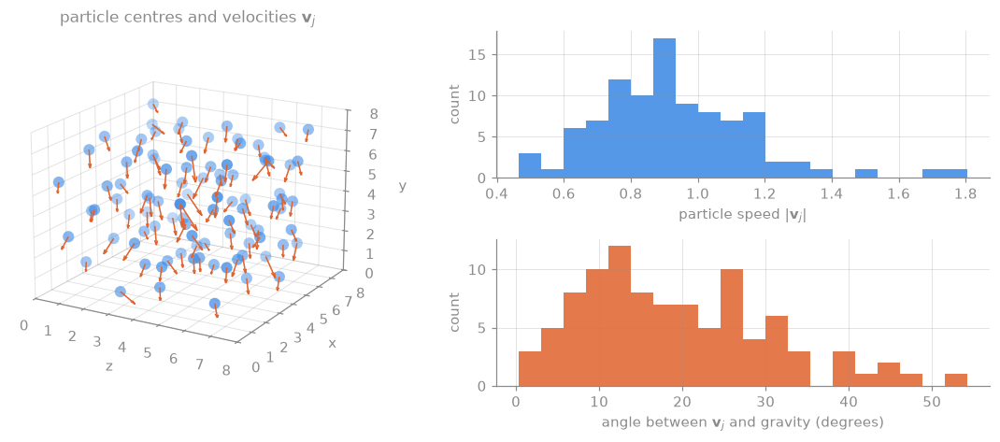
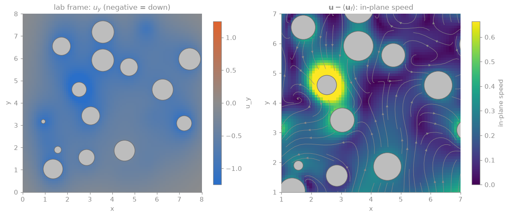
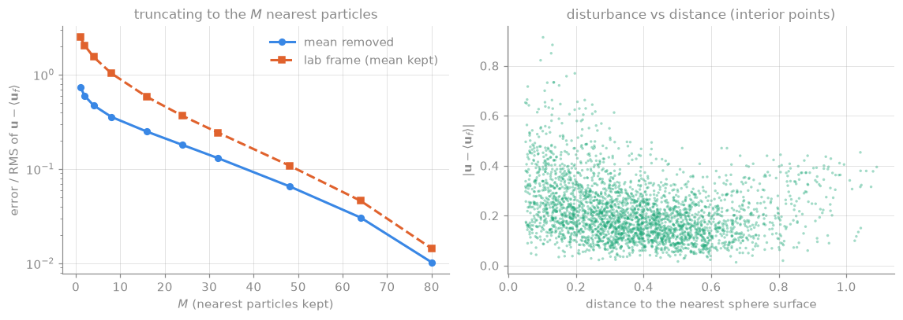

Settling particles and what a simulation gives us#
What you will learn
What a particle-resolved simulation of settling spheres contains: particle positions, particle velocities and a fluid velocity field.
The surrogate’s task: predict the fluid velocity at any point outside the particles from the particles alone.
How to generate, plot and inspect a toy snapshot with
course_utils.toy_data, and which of its symmetries (rotations, reflections, translations, relabelling) a surrogate may rely on, each checked numerically.Why a model that sees only the \(M\) nearest particles needs a few tens of them, measured on the toy.
The surface-average identity that ties each particle’s state to the flow around it, and where it stops being exact.
How the toy differs from real simulations, so you know what carries over and what does not.
Prerequisites: Lesson 00. Equivariance is used here only as an idea (“rotate the input, the output rotates with it”); the MolSSI e3nn course introduces it properly.
1. Many spheres falling through a fluid#
Picture a box of fluid with many solid spheres in it, all heavier than the fluid. Gravity pulls them down, the fluid resists, and each sphere soon settles at roughly steady speed. A moving sphere drags the fluid next to it along (the no-slip condition: on the surface, fluid and sphere move together). That disturbance spreads into the surrounding fluid and pushes on the neighbouring spheres, which in turn disturb the fluid around them. The flow anywhere in the box is a combined result of every particle and of how the particles affect one another.
A suspension like this is controlled by three dimensionless numbers [Guazzelli and Morris, 2011]: the Galileo (or Archimedes) number, which compares gravity, buoyancy and viscosity for one sphere; the density ratio; and the volume fraction. The surrogate does not take the Galileo number directly. It takes three per-particle quantities:
quantity |
meaning |
|---|---|
particle Reynolds number \(\mathrm{Re}_p = \lvert\mathbf q\rvert d/\nu\) |
how fast a sphere moves relative to the nearby fluid (\(\mathbf q\), the slip), compared with viscous diffusion over its diameter \(d\); a response of the suspension, not a control parameter |
density ratio \(\rho = \rho_p/\rho_f\) |
how heavy the particles are compared with the fluid |
volume fraction \(\phi\) |
the fraction of the box occupied by particles, globally or locally around one particle |
These three are the scalar inputs of the A0 model in Part II.
1.1 What a particle-resolved simulation provides#
The research behind this course used particle-resolved direct numerical simulation (PR-DNS) from collaborators. “Particle-resolved” means that many grid cells span each sphere’s diameter. The no-slip condition is imposed on every sphere’s actual surface, and no model of the drag is assumed. One snapshot (a single instant in time) contains:
the particles: centre \(\mathbf r_j\), translational velocity \(\mathbf v_j\) (also angular velocity, which we do not use), for every particle \(j = 1,\dots,N\);
the fluid: velocity \(\mathbf u(\mathbf x)\) (and pressure) at mesh points \(\mathbf x\) that lie outside the particles;
the parameters: density ratio, volume fraction, fluid viscosity and box size.
These simulations are accurate and expensive. One simulation can take a large amount of supercomputer time (it produces a sequence of snapshots), and it covers only one combination of parameters. We do not ship any of that data. Every lesson instead uses a small toy problem with the same structure.
1.2 The surrogate’s task#
A surrogate is a fast learned stand-in for the simulation. Our surrogate answers one question:
There is a catch in this question. The state \(\mathbf q_j\), the particle’s velocity relative to the fluid around it, is not in the snapshot: the snapshot gives \(\mathbf v_j\), and “the fluid around it” is itself part of the answer. What we can compute directly is a starting guess, the particle velocity relative to the measured mean fluid velocity, \(\mathbf q_j^{\text{base}} = \mathbf v_j - \langle\mathbf u_f\rangle\). Part III shows how the model corrects that guess by using its own predicted flow (self-consistent refinement). Here, the sign convention is \(\mathbf q = \mathbf v - (\text{fluid seen by the particle})\).
Particle-laden flow models that track particles but not the fluid around each one need exactly this, the fluid velocity “seen” by a particle, and they usually take it from a closure. A surrogate trained on PR-DNS can supply it at any point and costs far less than the simulation.
One training example is therefore a pair: (query point plus the particles near it) → velocity at the query point. Section 3 lists the physical symmetries that this map must respect.
2. A toy snapshot#
course_utils.toy_data builds a suspension that is small enough to compute exactly on a laptop:
\(N\) non-overlapping spheres of radius \(a = 0.5\) (diameter \(d = 1\)) at random positions in a cube;
each sphere has a prescribed lab velocity \(\mathbf v_j\), pointing mostly down (settling along \(-y\)) with a random spread in speed and direction;
each sphere radiates the Stokes flow of a translating sphere [Happel and Brenner, 1983] (Lesson 01b builds it), using its slip \(\mathbf s_j\) as the velocity. That flow is multiplied by a screening factor \(e^{-(r-a)/L}\) with \(L = 1\) by default, a crude stand-in for the way a crowd of particles damps a disturbance. The factor equals 1 on the sphere’s own surface, so the no-slip value there is unchanged, but it makes every disturbance die off within a few diameters and shapes every figure below;
the slips are solved self-consistently, so each sphere feels the flow made by the others (Lesson 01b explains why this is necessary, Part III how a model does it). The slip \(\mathbf s_j\) is the toy’s exact value of the state \(\mathbf q_j\) from Section 1.2;
a uniform backflow \(\mathbf U_b\) represents the fluid moving up as the particles move down (Lesson 01c).
import numpy as np
import matplotlib.pyplot as plt
import torch
from course_utils import plotting as cp
from course_utils.toy_data import ToyConfig, make_snapshot
cfg = ToyConfig() # 96 spheres in a box of side 8, settling along -y
snap = make_snapshot(cfg, seed=0)
print(f"N = {snap.n} spheres, box side {cfg.box}, radius {cfg.radius}")
print(f"global volume fraction phi = {cfg.volume_fraction:.3f}")
print("array shapes:", {k: getattr(snap, k).shape for k in ("positions", "velocity", "slip", "phi_local")})
print("mean particle velocity <v> =", np.round(snap.velocity.mean(0), 3))
N = 96 spheres, box side 8.0, radius 0.5
global volume fraction phi = 0.098
array shapes: {'positions': (96, 3), 'velocity': (96, 3), 'slip': (96, 3), 'phi_local': (96,)}
mean particle velocity <v> = [-0.04 -0.864 0.038]
All arrays are float64 NumPy. snap.positions and snap.velocity hold what a simulation reports about
the particles, and snap.field(points) returns the true fluid velocity at any point. This is the toy version
of the simulation’s fluid data, except that it can be evaluated anywhere, not just on a mesh.
2.1 The particles#

The arrows (left) point mostly down. The histograms (right) show the spread: speeds scatter around the mean, and directions tilt by tens of degrees. In a real suspension this spread comes from the interactions between particles. In the toy it is prescribed, so the particles provide varied inputs.
2.2 The fluid#
We slice the box through its centre plane \(z = 4\) and evaluate the true field on a grid. Spheres cut by the plane are drawn as grey discs.
A toy artifact to keep in mind
In the default toy the fluid as a whole drifts down. Each screened disturbance drags fluid along with its sphere, and their sum carries a net downward volume flux that nothing in the toy removes. The backflow \(\mathbf U_b\) is sized only to balance the particles’ own volume, which is far too small to cancel it. In a real suspension in a periodic box, the mean pressure gradient enforces zero net volume flux, so the fluid as a whole flows up while the particles settle. The research does not rely on either picture: it measures the mean exterior fluid velocity \(\langle\mathbf u_f\rangle\) in every snapshot and works relative to it (Lesson 01c). The figure therefore shows both frames.
u_f = snap.exterior_mean() # measured mean over exterior points
print("measured exterior mean <u_f> =", np.round(u_f, 3))
print("toy backflow U_b =", np.round(snap.backflow, 3))
measured exterior mean <u_f> = [-0.046 -0.672 0.018]
toy backflow U_b = [ 0.004 0.094 -0.004]

On the left, in the lab frame, the whole plane is the “down” colour. That is the drift described in the warning, not structure. On the right we subtract \(\langle\mathbf u_f\rangle\) and zoom into the interior, away from the open box edges. What remains is organised around the particles. The strongest disturbance surrounds the sphere near \((x, y) = (2.5, 4.6)\), the one that drags the fluid around it down hardest (dark blue on the left). Elsewhere the fluctuations are weaker, and the streamlines bend around the spheres and curl between them.
2.3 How far does one particle’s influence reach?#
The surrogate in Part II looks only at the \(M\) nearest particles of each query point. How large must \(M\) be? The toy answers this exactly, because its field is a sum of one term per particle. For random interior points we compute every particle’s contribution, sort them by distance and keep only the \(M\) nearest. Any constant offset is absorbed by the frame (Lesson 01c), so we measure what is left after removing the mean of the dropped part, relative to the RMS of \(\mathbf u - \langle\mathbf u_f\rangle\).
from course_utils.toy_data import stokes_sphere_matrix
from course_utils.equivariance import report
rng = np.random.default_rng(1)
pts = snap.sample_exterior(3000, rng=rng) # random points outside every sphere, >= 1 from the box edges
offsets = pts[:, None, :] - snap.positions[None] # (P, N, 3)
G = stokes_sphere_matrix(offsets, cfg.radius, cfg.screening_length) # (P, N, 3, 3), screened
contrib = np.einsum("pnij,nj->pni", G, snap.slip) # one term per particle
u = contrib.sum(1) + snap.backflow
print(report("sum of per-particle terms == snap.field", np.abs(u - snap.field(pts)).max(), 1e-12))
order = np.argsort(np.linalg.norm(offsets, axis=-1), axis=1) # nearest first
contrib = np.take_along_axis(contrib, order[:, :, None], axis=1)
fluct = u - u_f
rms = np.sqrt((fluct ** 2).sum(1).mean())
Ms = [1, 2, 4, 8, 16, 24, 32, 48, 64, 80]
err_mean_removed, err_lab = [], []
for M in Ms:
tail = contrib[:, M:].sum(1) # what an M-nearest model cannot see
err_mean_removed.append(np.sqrt(((tail - tail.mean(0)) ** 2).sum(1).mean()) / rms)
err_lab.append(np.sqrt((tail ** 2).sum(1).mean()) / rms)
for M, e1, e2 in zip(Ms, err_mean_removed, err_lab):
print(f"M = {M:2d} truncation error: mean removed {e1:6.1%} lab frame {e2:7.1%}")
PASS sum of per-particle terms == snap.field: max error 0.0e+00 (tol 1e-12)
M = 1 truncation error: mean removed 73.9% lab frame 248.5%
M = 2 truncation error: mean removed 59.4% lab frame 203.1%
M = 4 truncation error: mean removed 47.2% lab frame 153.9%
M = 8 truncation error: mean removed 35.6% lab frame 103.1%
M = 16 truncation error: mean removed 24.9% lab frame 58.0%
M = 24 truncation error: mean removed 18.0% lab frame 36.5%
M = 32 truncation error: mean removed 13.0% lab frame 24.3%
M = 48 truncation error: mean removed 6.6% lab frame 10.9%
M = 64 truncation error: mean removed 3.1% lab frame 4.6%
M = 80 truncation error: mean removed 1.0% lab frame 1.4%

Locality is weak in this toy. With the mean removed, a handful of neighbours misses a large part of the fluctuation, and the error falls below roughly a tenth only once a few tens of particles are kept (the printed table gives the values). Without removing the mean (dashed), truncation is much worse, because a model would also have to rebuild the collective drift of the distant particles from its few neighbours. This is a first reason to measure targets relative to \(\langle\mathbf u_f\rangle\). On the right, points right next to a sphere tend to move a little faster, but beyond a few tenths of a diameter the distance to the nearest sphere says little about the disturbance. Each velocity is a sum over many particles, not the echo of the closest one.
What this means for later lessons
The “mean removed” curve is the error of simply dropping the distant particles from the exact sum. It is a reference level, not a hard bound: a learned model can partly guess the dropped contribution from the shape of the neighbourhood (and, in this open box, from how close the point is to an edge), or do worse if its particle states are inaccurate. At the course’s default \(M = 32\) the reference is the value printed above for \(M = 32\). Keep it in mind when you read the accuracy numbers in Parts II and IV.
3. Symmetries the surrogate may rely on#
Before building any network we ask which transformations of a snapshot leave the physics unchanged. Each symmetry of the true map \(\{\text{particles}\}, \mathbf x_f \mapsto \mathbf u(\mathbf x_f)\) is a constraint that the surrogate can build in rather than learn. Like every symmetry claim in this course, each one is checked numerically.
3.1 Failure first: rotating only half the input#
Rotate the suspension about the box centre \(\mathbf c\) by some \(g \in O(3)\). The velocity at the rotated query point should be the rotated velocity:
But which inputs are rotated? Suppose we move the particle positions and forget their velocities. This is
easy to do, because gravity points “down” and it is tempting to keep it fixed. To build snapshots from arrays
we write a small builder out of the toy’s public pieces and confirm that it reproduces make_snapshot
exactly.
from course_utils.toy_data import ToySnapshot, solve_slip, local_volume_fraction
from course_utils.equivariance import random_o3, check_translation, check_permutation
def build_snapshot(positions, velocity, cfg, grid=None):
"""The toy's truth for given particle arrays (same steps as make_snapshot; solve_slip
honours cfg.self_consistent)."""
grid = np.eye(3) if grid is None else np.asarray(grid)
phi = cfg.volume_fraction
ub = -phi / (1 - phi) * velocity.mean(0) if cfg.backflow else np.zeros(3) # backflow
slip = solve_slip(positions, velocity, ub, cfg, grid) # self-consistent slip
return ToySnapshot(positions, velocity, slip, ub,
local_volume_fraction(positions, cfg.radius, cfg.phi_radius), cfg, grid)
same = build_snapshot(snap.positions, snap.velocity, cfg)
print(report("build_snapshot == make_snapshot (slip)", np.abs(same.slip - snap.slip).max(), 1e-12))
print(report("build_snapshot == make_snapshot (field)", np.abs(same.field(pts) - u).max(), 1e-12))
PASS build_snapshot == make_snapshot (slip): max error 0.0e+00 (tol 1e-12)
PASS build_snapshot == make_snapshot (field): max error 0.0e+00 (tol 1e-12)
c = np.full(3, cfg.box / 2)
move = lambda x, g: c + (x - c) @ g.T # rotate/reflect points about the centre
gs = random_o3(5, seed=0).numpy()
worst = 0.0
for g in gs:
half = build_snapshot(move(snap.positions, g), snap.velocity, cfg, grid=g) # velocities NOT rotated
worst = max(worst, np.abs(half.field(move(pts, g)) - u @ g.T).max() / np.abs(u).max())
print(report("positions rotated, velocities not", worst, 1e-12, "5 random g in O(3)"))
FAIL positions rotated, velocities not: max error 2.0e+00 (tol 1e-12) [5 random g in O(3)]
The error is of order one, so the check fails. The flow is not “rotate the box and nothing changes”, because the particles carry vectors. In this map (and in the surrogate’s inputs), the direction of gravity enters only through the particle velocities, so they have to rotate with everything else. (In a real simulation gravity also acts as a body force and sets the mean pressure gradient, but neither is an input here.)
3.2 Rotations and reflections, done right#
ToySnapshot.rotated(g) transforms positions and velocities (and the surface grid used for the
self-consistent solve, see Exercise 3) and recomputes the truth from scratch. The test therefore exercises the
whole generator, not a formula we already trust.
worst = 0.0
dets = []
for g in gs:
snap_g = snap.rotated(g)
worst = max(worst, np.abs(snap_g.field(move(pts, g)) - u @ g.T).max() / np.abs(u).max())
dets.append(int(round(np.linalg.det(g))))
print(report("toy field, O(3) equivariance", worst, 1e-12, f"5 random g, det = {sorted(set(dets))}"))
PASS toy field, O(3) equivariance: max error 2.3e-15 (tol 1e-12) [5 random g, det = [-1, 1]]
The error is at round-off level, reflections (\(\det g = -1\)) included. In the language of irreps, the
velocity field is a polar vector field (1o). The offsets \(\mathbf x_f - \mathbf r_j\) and the particle
velocities are polar vectors (1o), and \(\rho\) and \(\phi\) are scalars (0e). Part II builds a network with exactly these input and output types.
3.3 Translations and relabelling#
Shifting every particle and every query point by the same vector changes nothing, because only offsets
\(\mathbf x_f - \mathbf r_j\) enter. Renumbering the particles changes nothing either, because the particles
are a set, not a list. check_translation and check_permutation test both. check_permutation works on
torch tensors along an axis, so we wrap the NumPy generator.
q_pts = pts[:200]
def field_from(points, positions):
return build_snapshot(positions, snap.velocity, cfg).field(points)
check_translation(field_from, q_pts, snap.positions, name="toy field, translation")
def field_of_set(positions, velocity):
s = build_snapshot(positions.numpy(), velocity.numpy(), cfg)
return torch.as_tensor(s.field(q_pts))
check_permutation(field_of_set, (torch.as_tensor(snap.positions), torch.as_tensor(snap.velocity)),
axis=0, mode="invariant", name="toy field, relabelling particles");
PASS toy field, translation: max error 1.7e-15 (tol 1e-12) [3 random translations]
PASS toy field, relabelling particles: max error 1.3e-15 (tol 1e-12) [3 random permutations of axis 0 (invariant)]
Translation invariance is why the A0 inputs are offsets \(\mathbf x_{fj}\), not absolute positions. Permutation invariance is why A0 sums over neighbours (Lesson 02a).
3.4 An identity: on average, the fluid moves with each sphere#
The no-slip condition says that the fluid on a sphere’s surface moves with the sphere. The toy does not impose this point by point, because it skips the near-field corrections (Section 4). It imposes a weaker, averaged version: the self-consistent slip is chosen so that the field averaged over each sphere’s surface equals that sphere’s velocity, where “averaged” means a specific 50-point Lebedev quadrature [Lebedev and Laikov, 1999], \(\langle\cdot\rangle_i^{50}\):
The sphere’s own disturbance equals \(\mathbf s_i\) everywhere on its surface, and \(\widetilde W_i\) is the quadrature average of all the other spheres’ exact disturbances. (The tilde marks the toy’s exact interaction. In Part III and the notation page, \(W_i\) is the model’s predicted flow, averaged the same way.) Rearranged, \(\mathbf s = (\mathbf v - \mathbf U_b) - \widetilde W(\mathbf s)\): the state is a fixed point of a map built from the flow it creates. This is the toy’s version of the fixed point that Part III’s refinement looks for. The research version differs in two ways: it is written relative to the measured \(\langle\mathbf u_f\rangle\) rather than \(\mathbf U_b\) (Lesson 01c), and it uses the model’s predicted flow from the \(M\) nearest neighbours rather than the exact interaction.
from course_utils.toy_data import surface_points
spts, w = surface_points(snap.positions, cfg.radius, cfg.lebedev_order, grid=snap.grid) # (N, 50, 3)
u_surf = snap.field(spts.reshape(-1, 3)).reshape(snap.n, -1, 3)
u_avg = np.einsum("l,nlc->nc", w, u_surf)
print(report("50-point surface average == particle velocity", np.abs(u_avg - snap.velocity).max(), 1e-12,
f"{snap.n} spheres x {len(w)} Lebedev points, the grid that defines the slip"))
# the same average with a much finer rule: close to the true continuous surface average
spts31, w31 = surface_points(snap.positions, cfg.radius, 31, grid=snap.grid) # 350 points
u_avg31 = np.einsum("l,nlc->nc", w31, snap.field(spts31.reshape(-1, 3)).reshape(snap.n, -1, 3))
print(f"{len(w31)}-point surface average vs particle velocity: max error "
f"{np.abs(u_avg31 - snap.velocity).max():.1e} (quadrature level, not round-off)")
pointwise = np.linalg.norm(u_surf - snap.velocity[:, None], axis=-1).max() / np.abs(snap.velocity).max()
print(f"for contrast, the largest pointwise mismatch on a surface is {pointwise:.2f} (relative)")
PASS 50-point surface average == particle velocity: max error 1.3e-15 (tol 1e-12) [96 spheres x 50 Lebedev points, the grid that defines the slip]
350-point surface average vs particle velocity: max error 1.9e-05 (quadrature level, not round-off)
for contrast, the largest pointwise mismatch on a surface is 0.28 (relative)
The 50-point average matches to round-off, but that check is close to a tautology: the slip was solved to make exactly this average match. With a much finer rule, which approximates the true continuous surface average, the identity holds only to a small quadrature-level error (printed above). Exercise 3 meets the same quadrature error from another angle. Point by point the identity fails badly, which is one of the simplifications listed below. All of this holds with shielding off (the default). The optional shielding of Part V changes each sphere’s own term.
4. What the toy keeps and what it drops#
real PR-DNS |
toy |
|
|---|---|---|
one-particle disturbance |
resolved Navier-Stokes, wakes at finite \(\mathrm{Re}_p\) |
exact Stokes sphere (no inertia, fore-aft symmetric) |
interactions |
full, including lubrication |
self-consistent slip on surface averages; no near-field reflections |
no-slip |
exact on every surface |
only on average: exact for the 50-point Lebedev average that defines the slip, quadrature-level error for the true surface average (Section 3.4) |
domain |
periodic box |
open box; exponential screening \(e^{-(r-a)/L}\) (equal to 1 on each surface) keeps sums bounded |
particle velocities |
come out of the dynamics |
prescribed (random spread around settling) |
mean fluid velocity |
zero net volume flux, enforced by the mean pressure gradient |
uniform backflow term plus an unremoved net downward drift (Section 2.2, Lesson 01c) |
symmetries |
E(3), permutation |
the same, checked in Section 3 |
What carries over: the structure of the problem (a vector field that is a sum of disturbances from particles that each carry a vector state and interact), and all its symmetries. What does not: magnitudes, wake shapes and anything quantitative. Numbers you see in this course describe the toy, not real suspensions.
4.1 Coming next#
Lesson 01b builds the one-sphere disturbance and adds many of them together. Using the lab velocities \(\mathbf v_j\) fails visibly; using the slips \(\mathbf s_j\) works. This explains why a particle’s state is its slip and why the model needs self-consistency.
Lesson 01c asks which frame the targets should be measured in. It explains why the research subtracts the measured mean exterior fluid velocity \(\langle\mathbf u_f\rangle\) in every snapshot.
Summary#
A settling suspension is described by particle positions and velocities plus a fluid velocity field. A particle-resolved simulation provides all three, at high cost.
The surrogate maps (query point, nearby particles) to the fluid velocity at that point. Each particle’s state \(\mathbf q_j\) is not measured; only the guess \(\mathbf v_j - \langle\mathbf u_f\rangle\) is.
Locality is weak: on the toy, a model that keeps only the \(M\) nearest particles needs a few tens of them, and the error is far smaller once the measured mean is removed.
make_snapshotgenerates a toy suspension.snap.field(points)is its exact fluid velocity, andsnap.rotated(g)recomputes it for a transformed suspension.The true map is O(3)-equivariant only if the particle velocities rotate too, because gravity lives in them. It is also translation-invariant and invariant to relabelling particles. All were checked at round-off level.
The toy satisfies no-slip only on average: exactly for the 50-point Lebedev average that defines the slip, and to quadrature-level error for the true surface average. That identity is the toy’s version of the fixed point that self-consistent refinement solves for.
The toy keeps the structure and the symmetries of the real problem, but not its quantitative physics.
Exercises#
Crowding. Generate snapshots with
n_particles= 32, 96 and 160 (same box). For each, print the volume fraction and the mean of \(\lvert\mathbf s_j - (\mathbf v_j - \mathbf U_b)\rvert\), which measures how much the other spheres change each slip. How does the interaction effect grow with crowding?A mirror. Take \(g = \mathrm{diag}(1, -1, 1)\), the mirror that flips “up” and “down”. Check that
snap.rotated(g)satisfies the equivariance relation of Section 3.2. What happens to the settling direction, and why is the result still a valid suspension?A fixed quadrature grid. Repeat the check of Section 3.2 with
build_snapshot(move(snap.positions, g), snap.velocity @ g.T, cfg), which leaves the Lebedev grid unrotated. How large is the error now, and where does it come from?
Solution 1
for n in (32, 96, 160):
s = make_snapshot(cfg, n_particles=n, seed=0)
effect = np.linalg.norm(s.slip - (s.velocity - s.backflow), axis=1).mean()
print(f"N = {n:3d} phi = {s.config.volume_fraction:.3f} mean |s - (v - U_b)| = {effect:.3f}")
The interaction effect grows with the volume fraction. With more neighbours within a few screening lengths, each sphere sits in a stronger flow made by the others, and its slip departs further from its lab velocity. This is why pure superposition with lab velocities gets worse in denser suspensions (Lesson 01b).
Solution 2
g = np.diag([1.0, -1.0, 1.0])
s_g = snap.rotated(g)
err = np.abs(s_g.field(move(pts, g)) - u @ g.T).max() / np.abs(u).max()
print(report("mirror y -> -y", err, 1e-12))
print("new mean particle velocity:", np.round(s_g.velocity.mean(0), 3))
The particles now “settle” upwards. Physically this is the same suspension of heavy particles with gravity pointing up. The equations do not care which way gravity points. Gravity is carried by the particle velocities, and those were mirrored too. A model that hard-coded “down” as \(-y\) would break this symmetry.
Solution 3
worst = 0.0
for g in gs:
fixed = build_snapshot(move(snap.positions, g), snap.velocity @ g.T, cfg) # grid not rotated
worst = max(worst, np.abs(fixed.field(move(pts, g)) - u @ g.T).max() / np.abs(u).max())
print(f"fixed-grid error: {worst:.1e}")
The error is printed by the code. It is many orders of magnitude above round-off, yet far below the order-one failure of Section 3.1. The self-consistent slip uses a surface average computed with a finite set of Lebedev points. Rotating the suspension without rotating those points samples the sphere surfaces at different relative positions. The quadrature is exact only for polynomials up to some degree on the sphere, and the disturbance is not such a polynomial, so the two averages differ slightly. The error is of the same order as the quadrature gap printed in Section 3.4, for the same reason. Rotating the grid with the suspension removes the discrepancy. Part III returns to this when the model, not the toy, computes the surface averages.
References#
MolSSI e3nn course, Introduction: irreps and equivariance.
[Guazzelli and Morris, 2011]: settling suspensions, volume fraction, hindered settling.
[Happel and Brenner, 1983]: the Stokes solution for a translating sphere used by the toy.
[Lebedev and Laikov, 1999]: the quadrature rule for surface averages.